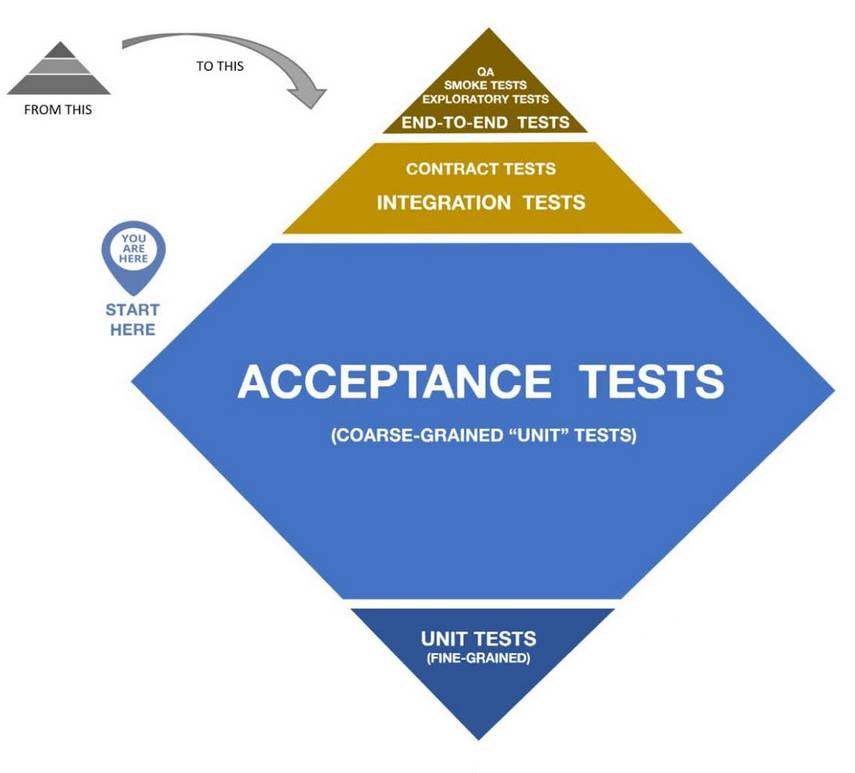

üë∂ FERMETURE : L'Atelier est ferm√© jusqu'au 29 ao√ªt en raison d'un cong√© paternit√©. üë∂
Questions fréquentes
Cette FAQ répond aux questions les plus fréquentes de nos clients. Cette partie se veut pédagogique et explicative. Nous souhaitons vous faire comprendre notre manière de travailler et son intérêt pour votre entreprise.
Si votre question n'est pas écrite, ou que la réponse vous laisse sur votre faim, contactez-nous, nous répondrons avec joie.
Sur la qualité
Qu'appelez-vous qualité ?
Un logiciel de qualité est un logiciel qui vous satisfait. Notre tâche en tant que professionnels est de bâtir des logiciels qui répondront à ce critère tout au long de leur durée de vie, que nous travaillions encore ensemble ou non. Lorsque l'on parle de qualité pour un bâtiment ou un véhicule, on s'attend à quelque chose qui puisse conserver sa fonction initiale le plus longtemps possible. Un bâtiment de qualité est durable et réparable. Le monde du logiciel n'obéit pas aux mêmes lois.
Le développeur Roy Osherove disait de la programmation informatique qu'elle est l'art de bâtir des châteaux de vent. Hunt&Thomas parlent plus volontiers de l'art de recueillir et formaliser des connaissances. Les deux définitions portent le même message : un code de qualité n'est pas de marbre, il est au contraire le plus perméable au changement possible. Votre métier évolue sans cesse, vos connaissances s'affinent, votre stratégie doit répondre aux enjeux mouvants d'un monde en perpétuel mouvement. Un bon logiciel ne freine pas ces processus naturels, mais s'y adapte. Voici pour nous l'enjeu de la qualité logicielle.
Ne faites-vous pas de la surqualité ?
Si pour vous, surqualité signifie "fonctionnalité payée, mais non demandée", la pratique de TDD nous en préserve. Nous écrivons ensemble les tests qui définissent le comportement votre logiciel. De retour à l'atelier, nous écrivons le code minimal capable de faire passer ces tests. La simplicité est notre maître mot.
La perfection est atteinte, non pas lorsqu'il n'y a plus rien à ajouter, mais lorsqu'il n'y a plus rien à retirer.
Antoine de Saint-Exupéry dans Terre des hommes
La surqualité peut également désigner un code "trop propre" dans la bouche de certaines personnes. Nous avons fait il y a longtemps de deuil du code parfait, qui n'existe pas. En revanche, nous ignorons ce que signifie un code "trop propre". Un code propre est un code ayant une réponse optimale au changement. Un code peut s'encrasser et réduire la vélocité des développeurs. L'existence du cas inverse est hypothétique.
Un code "trop propre", si une telle chose est possible, serait donc un code qui facileterait au-delà du raisonnable son édition future ? Nous le prenons comme une bonne nouvelle, pas comme de la surqualité.
Pouvez-vous baisser vos standards pour respecter mes délais ?
Nos standards sont des garde-fous, pas un dogme. Nous passons outre dans certains cas :
- Les prototypes.
- Les logiciels one shot.
- La dette technique.
Un prototype est un logiciel Quick&Dirty permettant de réaliser une démonstration, un POC ou de tester une hypothèse avant la réalisation d'un vrai logiciel. De même que vous ne prendriez pas la route au volant d'un concept car, nous interdisons contractuellement à nos clients de déployer en production un prototype. Ils ne doivent servir qu'à sécuriser vos choix futurs. Un logiciel prototype ne respecte aucun standard de qualité ou de sécurité, donc il peut être produit très rapidement pour un coût modeste. L'équivalent dans l'automobile est le modèle de terre cuite qui sert aux premiers essais en soufflerie. Il permet de valider le dessin final, mais ne roulera jamais.
Un logiciel one shot est un morceau de code qui n'est pas destiné à durer dans le temps. Il est produit pour un but précis, avec une date d'expiration définie à l'avance, dont dépendront les standards de qualité. Les cas les plus fréquents sont les convertisseurs de données ou "moulinettes", servant le temps d'une migration. Nous produisons de tels logiciels, mais refuserons tout contrat de maintenance ultérieur à leur sujet.
La dette technique concerne les logiciels que nous développons déjà à vos côtés. Elle consiste à accélérer le développement d'une fonctionnalité dont vous avez besoin rapidement, contre un temps plus long de "réparation" ensuite. La dette technique est similaire à la dette monétaire. Nous ne prêtons que temporairement, pour un temps défini à l'avance. Une dette ne peut pas servir à en couvrir une autre. Contracter une dette implique des intérêts. En d'autres termes, nous pouvons temporairement produire plus vite, au prix d'une "blessure" dans le code qui handicapera les développements futurs tant qu'elle n'est pas soignée. Soigner la blessure prend plus de temps qu'il n'en aurait fallu pour réaliser les choses proprement dès le départ. En bref, la dette technique vous permet de raccourcir le délai de livraison d'une fonctionnalité, en échange d'un temps de "repos" plus tard.
Quelles sont vos sources ?
La formation initiale d'un développeur est très vite caduque. Nous défendons l'obligation de formation continue pour l'ensemble de notre profession, donc nous commencons par nous l'appliquer à nous mêmes.
Trois sources permettent à l'Atelier de proposer les pratiques les plus reconnues :
- Les ouvrages de maîtres de la professions, socle impérissable.
- La littérature scientifique, étai des connaissances.
- L'expérience, notre maîtresse en artisanat.
Ces trois sources mêlent actualité brûlante et prise de recul, sujets à la mode et validation des acquis, confirmation de nos pratiques et armes contre le biais de confirmation. Lorsque nous intervenons chez vous, vous avez le droit de nous demander nos sources.
Sur les technologies employées
Avec quels langages travaillez-vous ?
Réponse courte : tout est possible, mais .NET est notre plateforme de prédilection.
Réponse longue : nous préférons les langages orientés objet de haut niveau. Java, C#, C++ ou PHP nous sont familiers. Nous n'avons pas souhaité inclure cette liste dans notre présentation générale pour ne pas focaliser nos clients sur ce point. Les langages sont nos outils, nous utilisons le plus adapté pour chaque problème. Si nous devons nous mettre à niveau sur un langage, les délais avant livraison s'allongeront de manière transparente, il n'y aura pas de coût caché de formation à votre charge.
Êtes-vous compétent en Front-End ?
Ce site pourrait servir de réponse. Il est fonctionnel et sobre, peut-être trop sobre d'ailleurs. Nous pouvons élaborer des interfaces simples, mais nos talents en UI/UX s'arrêtent là. Nous pouvons cependant collaborer avec un intégrateur ou un développeur spécialisé dans les interfaces graphiques si vos besoins dépassent nos compétences.
Comment testez-vous ?
Sur les projets neufs
Pour tous les projets neufs, nous pratiquons TDD, qui n'est pas un élément négociable (sauf rares cas). Plus précisément, nous pratiquons Outside-In Diamond TDD, qui offre une plus grande souplesse que la traditionnelle pyramide de tests, que nous considérons comme trop rigide.

Notre pain quotidien, c'est le test d'acceptation ou test fonctionnel. Il détaille les clauses du contrat que nous avons passé ensemble en de multiples affirmations que nous relirons périodiquement avec vous afin de nous assurer d'avoir bien cerné votre besoin.
Les tests contractuels ou d'intégration, décrivent le comportement que nous avons fixé ensemble au début d'une itération. Nous leurs donnons une valeur juridique, ces tests valident la conformité des travaux à votre demande initiale.
Les tests de plus haut niveau (smoke tests, end-to-end tests) viennent démontrer le bon fonctionnement de la solution en interaction avec le monde extérieur. Ils nous servent également en démonstration, lorsque nous livrons une itération.
Nous ne sommes pas contre l'utilisation de tests plus fins, comme les tests unitaires. Nous pensons qu'en grand nombre ils rigidifient le code en dissuadent le refactoring, pratique fondamentale chez nous. Aussi, nous ne les utilisons que sur des parties critiques du code, où la manière de procéder importe autant que le résultat obtenu (performances, algorithme précis, cryptographie, etc.).
Sur les projets legacy
Nous adoptons la définition de Michael Feathers. Le Code Legacy est tout code non-testé qui nous est confié. Dans les cas où nous acceptons de reprendre un tel code, il est exclu, sauf si votre budget est colossal, de l'assainir complètement d'un coup. Le code ajouté ou modifié sera testé comme du code neuf. Le code préexistant sera sécurisé à l'aide de tests plus grossiers (smoke test) selon vos besoins, le niveau de confiance que vous souhaitez et votre budget.
Une fois repris et étayé, votre code devra être progressivement assaini. Un budget mensuel devra être établi à ce titre, il ne servira qu'à réduire l'endettement de votre application, donc à faciliter les développements futurs. Un bon budget de maintenance représente une charge non-négligeable sans pour autant gréver votre rentabilité. Il n'est pas de l'argent investi à perte, mais bien la garantie que le logiciel dans lequel vous avez investi tant d'efforts ne décède pas un beau matin, trop endetté pour pouvoir évoluer au rythme de vos besoins.
En cas de défaut
Nous garantissons qu'aucun bug ne reviendra après sa résolution. Pour cela nous utilisons les tests de défaut. Pour chaque bug constaté, un test est écrit afin de le reproduire. Puis le code est modifié afin de faire passer ce test. Ainsi le bug corrigé ne peut pas revenir sous cette forme sans que nous en soyons informés.
Sur la gestion de projet
Qu'entendez-vous par "Pas de régie" ?
Les raisons en sont expliquées sur le blog. https://blog.enzosandre.fr/2020/09/01/jarrete-le-teletravail/
Pour l'expliquer autrement, plus une mission s'étale dans le temps, plus nous exigerons d'autonomie. Les missions courtes (1 mois ou moins) en présentiel sont possibles, mais au-delà, le présentiel devra se raréfier.
Comprenez également que nous ne sommes pas des prestataires. L'indépendance n'est pas qu'une affaire de lieu de travail, mais également une autonomie en matière d'horaires et de calendrier. Sauf impératif (réunion, formation, livraison, etc.), nous ne rendons de compte à personne concernant notre agenda, seule la date de livraison que nous avons négociée et les jalons nous sont opposables.
Nous servons en règle générale plusieurs clients à la fois : un seul client en développement (l'activité est prenante), mais une multitude en conseil, formation, maintenance et autres activités. Nous ne pouvons pas nous permettre d'être bloqués à 100% plus de quelques semaines.
Travaillez-vous sur site ou à distance ?
TLDR;
Pour les missions d'audit, toujours sur site. Pour les formations, les parties magistrales peuvent être à distance, pas les TP/exercices/Katas. Pour le développement, de préférence à l'Atelier, sauf si le projet le requiert.
L'Atelier est d'abord le lieu où l'artisan travaille. Nous passons la majorité de notre temps à façonner nos logiciels dans un environnement que nous avons adapté à l'exercice de notre art. Nous y maîtrisons notre temps et les technologies de l'information nous permettent de communiquer avec l'extérieur de manière asynchrone, afin d'éviter les interruptions. Nous avons construit à domicile les conditions optimales à l'exercice de notre art. Nous tenons à travailler au maximum dans le calme de notre atelier afin de livrer le meilleur de nous-mêmes.
Toutefois, lorsque le projet le requiert, nous effectuons le déplacement dans vos locaux, sur le chantier ou dans tout autre lieu où notre présence serait nécessaire. L'échange humain direct, chargé d'implicite et de non-verbal, charrie une densité d'information qu'aucune technologie ne peut retranscrire. Notre vision de l'audit est intégrale : ne lire que le code c'est passer à côté du contexte qui l'a produit. Cela revient souvent à reproduire indéfiniment les mêmes erreurs. Tous nos audits se font en partie là où travaillent vos équipes. Il en est de même pour nos formations.
En dehors des cas sus-mentionnés, il peut nous arriver d'accepter des missions "sur site", de courte ou moyenne durée. Nous tenons à ce qu'elles restent l'exception. L'environnement de bureau ne nous a jamais paru propice à l'exercice de notre métier, qui nécessite d'alterner des phases sociales avec de longs silences studieux.
Je travaille en cycle en V, peut-on s'entendre ?
Dans notre courte carrière, nous n'avons jamais vu de projet figé dès l'origine qui n'ait pas bougé à la fin. Pendant le développement de votre application, la vie continue, votre métier évolue et pire : le développement de votre logiciel va nous amener inévitablement à vous poser des questions auxquelles vous n'aviez pas pensé. Il est presque sûr que ces questions vont amener une nouvelle vision de vos besoins. Pour ne rien arranger, il nous arrive également d'être force de proposition.
Nous sommes cependant conscients que la culture du cycle en V est fortement ancrée dans certaines entreprises et que le management y tient. Nous pouvons nous adapter à condition que l'on nous laisse la possibilité de travailler par itérations de notre côté. Nous vous livrerons régulièrement de la valeur, comme pour tous nos clients. Libre à vous de l'ignorer jusqu'à la fin du cycle global.
Cette manière de travailler suppose que nous soyons en contact permanent avec un référent métier capable de nous préciser ce que les spécifications ne disent pas. Nous ne travaillons pas sans tests, ils sont les clauses du contrat que nous passons ensemble. Vos expert devra être en capacité de valider ces tests, mais également de faire remonter aux concepteurs des spécifications les changements qui s'avèrent nécessaires.
Nous préférons être honnêtes avec nous clients. Peut-être existe-t-il des développeurs capables de tenir des engagements de qualité sans poser ces conditions. Nous n'en faisons pas partie. Nous savons d'expérience que nous sommes incapables de développer ce que nous pensons être de bons logiciels si ces deux critères ne sont pas remplis.
J'ai déjà réalisé une estimation de temps, la respecterez-vous ?
Tout projet est défini par quatre variables : le temps, les ressources (ou coût), la qualité et le périmètre. Travailler avec un Atelier logiciel comme nous en bloque déjà deux.
-
Nos ressources sont limitées et même si elles ne l'étaient pas, 9 femmes ne font pas un enfant en un mois.
-
Sauf pour des projets très spécifiques, nous ne transigeons pas sur la qualité, ce serait vous desservir.
Un choix s'offre donc à vous :
-
Nous livrons à l'échéance que vous avez définie, un logiciel fonctionnel, apportant de la valeur, mais au périmètre incertain.
-
Vous préférez ne pas fixer de délai et attendre que l'ensemble de votre logiciel soit prêt. Nous pouvons fournir un ordre de grandeur, rien de plus.
L'arbitrage entre l'envergure et les délais vous appartient complètement. Nous nous engageons à être parfaitement transparents sur les deux autres variables, à travers une tarification horaire ou journalière. Nous aidons nos clients à faire le choix le plus sécurisant pour eux.
Sur la formation
Quelle est votre pédagogie ?
Notre pédagogie est totalement orientée vers la pratique, à travers la répétition de katas et la réalisation de projets en situation professionnelle ou semi-professionnelle.
En plus de croire fermement que la pratique encadrée par un maître est la seule école du développeur, nous avons été traumatisés par ces diaporamas de 1200 slides, subis encore aujourd'hui par trop d'étudiants. Nous ne voulons pas être ce genre de formateur.
Nous ne rejetons pas la forme magistrale pour autant, mais celle-ci vient plutôt introduire une matière, préciser des notions ou encore enseigner des connaissances théoriques nécessaires à l'exercice suivant.
Pour nous, un bon enseignement est constitué de 20% de théorie, 80% de pratique.
Partout en France, tant que l'établissement défraie. Habituellement, je me rends sur le lieu de mes cours pour des durées d'une semaine à un mois.
J'ai déjà enseigné à Arras, Nantes et Bordeaux ainsi.
Nous demandons simplement aux reponsables pédagogiques de regrouper au maximum les cours.
Quelles prestations proposez-vous aux établissements de formation ?
En plus des cours, les établissements avec lesquels nous travaillons nous sollicitent pour des prestations annexes, comme les jurys ou les suivis de mémoires professionnels. Nous ne sommes pas fermés à l'idée de travailler avec des établissements dans lesquels nous n'enseignons pas, à condition que le sujet traité corresponde à notre coeur de métier. Les apprenants bénéficient de notre veille scientifique le temps de leur mémoire.
Informations pratiques
Quel est votre TJM ?
TLDR;
Demandez-nous un devis.
Le tarif des prestations dépend de leur nature, de leur complexité, de l'endettement technique du projet, du lieu d'exécution (nous majorons les prestations sur site afin d'être au maximum dans l'environnement pleinement productif qu'est notre Atelier) ou de la durée de la prestation. Par conséquent, il nous est impossible de donner un chiffre. Cependant les devis sont gratuits, contactez-nous.
Do you speak english ?
We can work in english as developers. We cannot teach nor audit yet as it requires extended understanding of implicit meanings.
We plan to spend some months in an anglo-saxon country to improve our english.